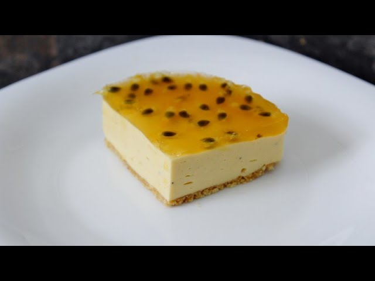

Mis recetas favoritas
postre de maracuya

Ingredientes:
pulpa de maracuya
bolsa de leche
leche condensada
leche en polvo
galletas
azúcar
Preparación:
En un recipiente mezclar la pulpa de maracuya junto con la leche de bolsa.
se debe de agregar la leche condensada junto con la leche en polvo.
se debe licuar la mezcla que acaba,os de hacer
teniendo la mezcla lista, en el recipiente donde se va a servir, se coloca una capa de galletas.
se debe agregar la mezcla encima de las galletas.
despues de eso se vuelve a colocar otra capa de galletas nuevamente
se repite el proceso hasta que se llene el recipiente, o bien hasta que guste
luego de eso se refrigera por unas horas antes de servir
en una olla vamos a hacer la mermelada de maracuya
se coloca la pulpa de maracuya junto con el azucar y un poco de agua, y se pone en fuego medio
se debe de mover constantemente hasta que la mezcla espese
teniendo la mezcla espeza, se lleva al refrigerador hata que se enfrie
despues de unas horas, revisamos el postre si ya esta cuajado, y le agregamos la mermelada encima
y por ultimo se sirve